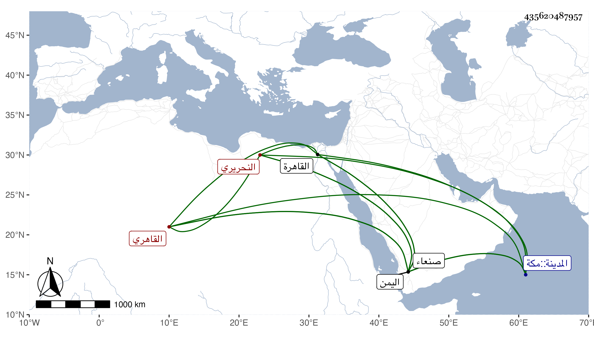

0902Sakhawi.DawLamic.ITO20230111-ara1.EIS1600.435620487957
Biography ID: 435620487957
32
محمد بن محمد بن محمد فتح الدين أبو الفتح النحريري القاهري ويعرف بابن أمين الحكم . ذكره شيخنا في إنبائه فقال : سمع على جماعة من شيوخنا وعني بقراءة الصحيح وشارك في الفقه والعربية وأكثر المجاورة بالحرمين ودخل اليمن فقرأ الحديث بصنعاء وغيرها ثم قدم القاهرة بأخرة فوعك . ومات بالبيمارستان سنة اثنتين وعشرين عن نحو الخمسين . وسبق فتح الدين أبو الفتح محمد بن محمد ابن محمد النحريري فيمن جده إسماعيل متأخر عن هذا .
